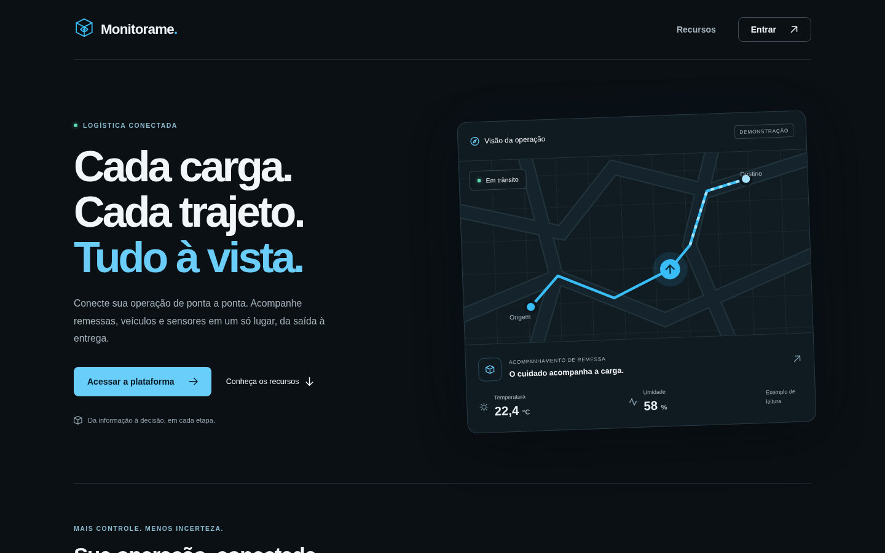
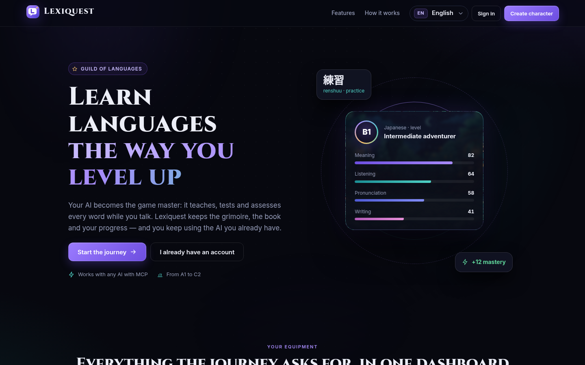
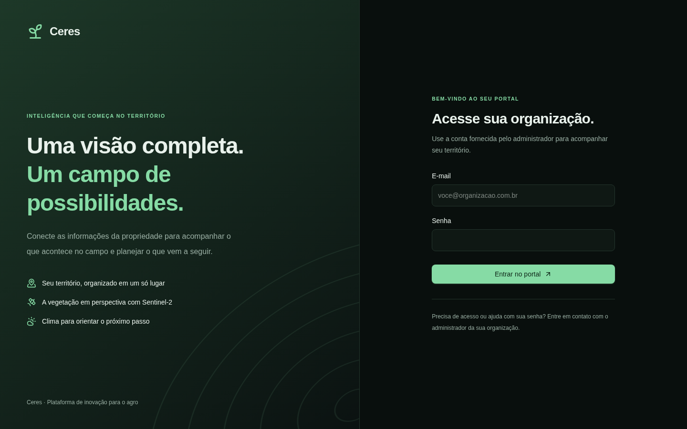
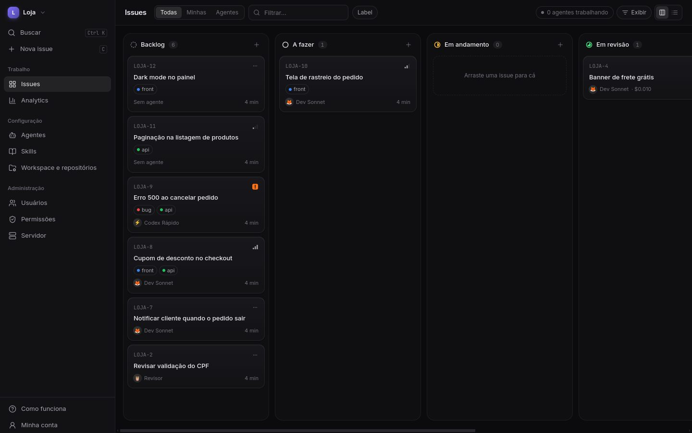

Objetivo
Atuar como Desenvolvedor Backend Java (Pleno), com foco em Spring Boot, APIs REST e bancos de dados relacionais.
Resumo Profissional
Desenvolvedor backend com dois anos de experiência em Java e Spring Boot em produção. Na LXTech (canal homologado TOTVS) sou responsável por mais de 30 sistemas do agronegócio integrados ao ERP TOTVS PIMS, participando do ciclo completo da entrega: levantamento de requisitos com o cliente, desenvolvimento, publicação e suporte em produção, com PostgreSQL, Oracle e SQL Server.
Fora do trabalho, desenvolvo e mantenho meus próprios produtos em um servidor próprio, com CI/CD, testes automatizados e integrações com IA (servidores MCP). Perfil responsável, proativo, comunicativo e autodidata.
Experiência Profissional
LXTech (canal homologado TOTVS)
nov/2024 – atual- Desenvolvimento e manutenção de mais de 30 sistemas em Java com Spring Boot em produção para empresas do agronegócio: custos, fluxo de caixa, compras, fornecedores, pesagem de caminhões e produção industrial, integrados ao ERP TOTVS PIMS.
- Criação de APIs REST e novas funcionalidades para os módulos do produto; investigação e correção de problemas em produção reportados pelos consultores; reuniões com clientes para alinhar requisitos.
- Modelagem de dados e otimização de consultas em PostgreSQL, Oracle e SQL Server; integrações com SAP e outros sistemas TOTVS; modernização de sistemas legados.
- Entregas em três ambientes (desenvolvimento, homologação e produção), com revisão de código, publicação automatizada e serviços em Docker.
CNH Industrial
jun/2022 – jun/2024Gestão de peças em projetos, do cadastro à relação com fornecedores, com automação de controles e análise de dados em ambiente multinacional.
ElringKlinger
mar/2022 – mai/2022Acompanhamento de requisições Kaizen e automação de relatórios entre diferentes áreas.
Formação Acadêmica
Bacharelado em Engenharia da Computação
conclusão prevista: dez/2026TCC: Arquitetura IoT para Monitoramento de Variáveis Ambientais e Rastreabilidade em Tempo Real na Cadeia de Frio (projeto Monitorame, em equipe de três).
Competências Técnicas
Backend
Bancos de dados
Front-end
Testes e DevOps
IA
Idiomas
Português nativo. Inglês avançado (conversação e leitura técnica; Red Balloon, Cultura Inglesa e Wise Up).
Projetos Pessoais · GitHub ↗
Monevas · no ar em monevas.matheuszem.org (código privado): gestão financeira pessoal e de carteira de investimentos. Importa extratos, organiza o orçamento por categoria e acompanha ações, FIIs e BDRs com análises apoiadas por IA. Backend em monólito modular com autenticação JWT e um servidor MCP para que o assistente de IA do usuário consulte a própria carteira. Um serviço em Python alimenta a base com dados públicos da B3 e da CVM (mais de 22 milhões de cotações).

Monitorame · TCC (código privado): monitoramento da cadeia de frio. Unidades ESP32 com sensores de temperatura, umidade e GPS enviam leituras por MQTT; o sistema acompanha veículos, remessas e motoristas em mapa em tempo real, com rotas (OSRM), geofence e cadastro em lote por planilha.

Lexiquest · código privado: plataforma de estudo de idiomas em que o próprio assistente de IA do usuário (Claude, ChatGPT) é o professor, conectado por um servidor MCP. O servidor guarda os prompts, os schemas e a validação; o painel web mostra a evolução de cada palavra.

Ceres · em desenvolvimento (código privado): plataforma para o agro que reúne lavoura, pecuária, satélite e IoT sobre um mapa vivo da fazenda, com desenho de talhões e cálculo de área.

Foreman · público no GitHub: gerenciador de tarefas auto-hospedado em que as issues são executadas por agentes de código (Claude Code, Codex), cada uma em uma worktree git isolada, com regras de fluxo, permissões por etapa e análise de custos.
Homelab: servidor próprio que hospeda os projetos acima, com ambientes de desenvolvimento e homologação por projeto. Jenkins para o dev, GitHub Actions → GHCR → Watchtower para a homologação, Cloudflare Tunnel com Zero Trust, Tailscale e backup diário criptografado.
Ferramentas desktop · públicas no GitHub: activity-manager, git-manager, mail-reader e animated-terminal. Aplicativos Electron para Linux e uma extensão do VS Code.